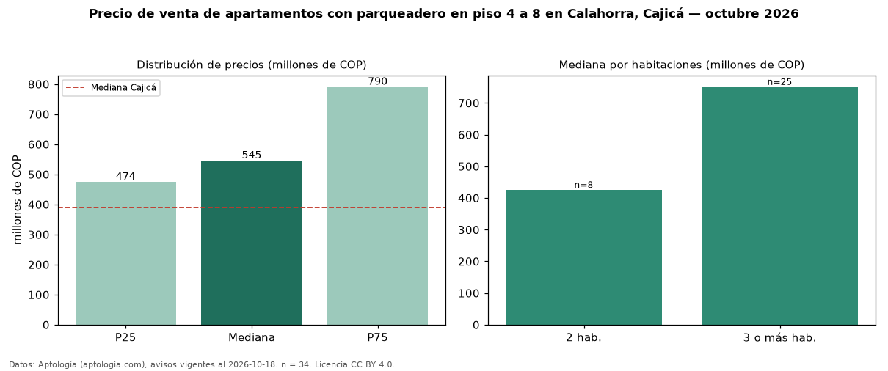

Precio de venta de apartamentos con parqueadero en piso 4 a 8 en Calahorra, Cajicá — octubre 2026
En Calahorra, Cajicá, la mediana de precio de venta de apartamentos con parqueadero en piso 4 a 8 es COP 545 millones, según 34 avisos vigentes. Prácticamente coincide con la mediana de los apartamentos con parqueadero en venta de Calahorra (COP 555 millones, n = 90); este segmento reúne el 38 % de esos avisos. Por metro cuadrado, la mediana es COP 6,88 millones/m² (n = 34), 1 % por debajo de los apartamentos con parqueadero en venta de Calahorra (COP 6,92 millones/m²). El área mediana anunciada es 82 m². El segmento con más oferta es el de 3 o más habitaciones (25 avisos, mediana COP 750 millones); pasar de 2 habitaciones a 3 o más habitaciones cambia la mediana +76 %. La administración mediana declarada es COP 400.000 al mes (n = 26). El estrato más frecuente es 5 (62 % de los avisos con estrato). La mediana de todos los apartamentos en venta de Cajicá es COP 390 millones (+40 % de diferencia). Datos: Aptología (aptologia.com), CC BY 4.0 — https://www.aptologia.com/venta/cajica/calahorra. Archivos: PDF, CSV con las cifras y gráfica PNG.

| Avisos únicos | 34 |
|---|---|
| Percentil 25 | COP 474.250.000 |
| Mediana | COP 544.950.000 |
| Percentil 75 | COP 790.000.000 |
| Mediana por m² | COP 6.875.000 |
Fuente: avisos vigentes de portales inmobiliarios recopilados por Aptología, deduplicados (mínimo 30 avisos únicos por celda). Precios pedidos, no cerrados. Fecha: 2026-10-18.